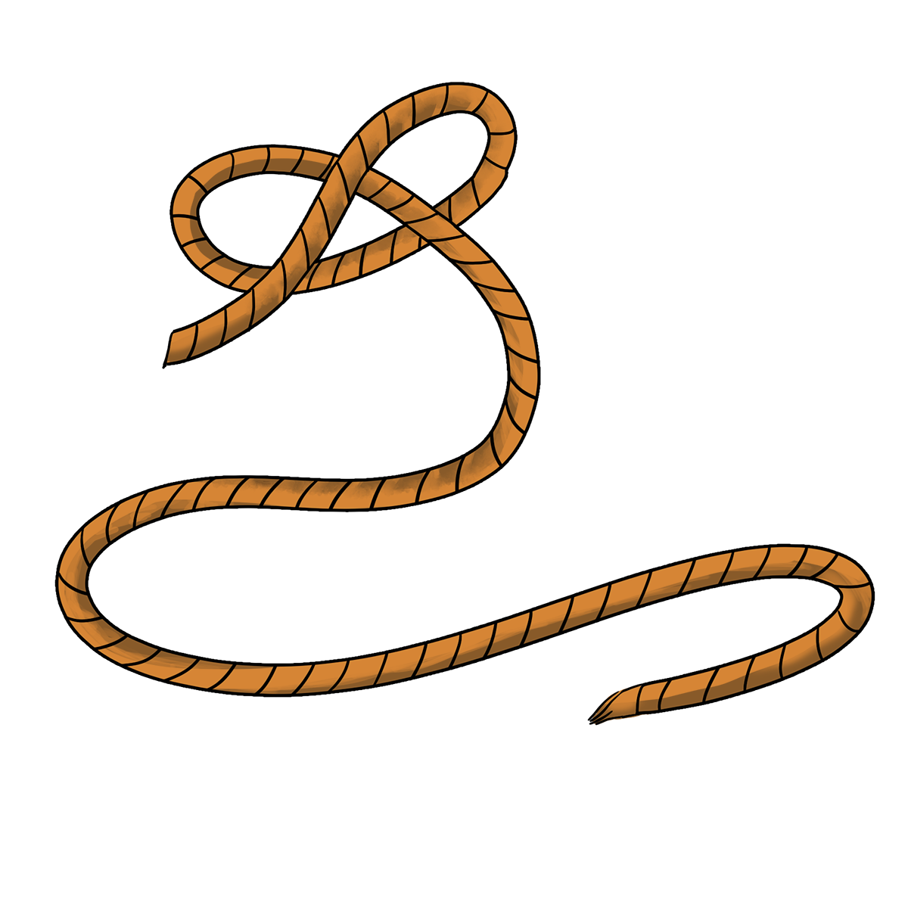
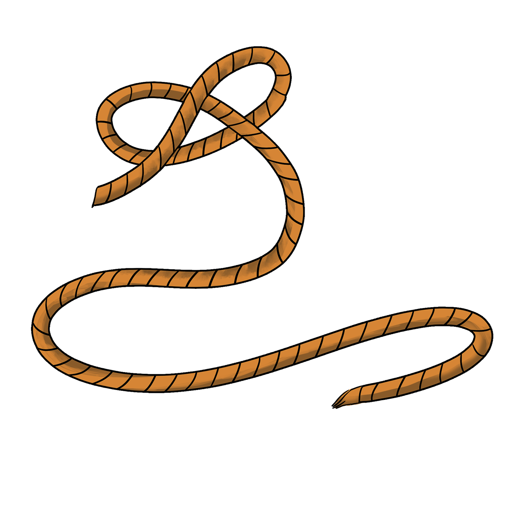

รุ่นพี่โตเดินถอยหลัง 2 3 ก้าวอย่างช้าๆก่อนจะหยุดทรงตัวนิ่ง “นี่โชคดีนะที่เป็นชั้นที่โดน”
รุ่นพี่โตพูดอย่างสุขุม และจึงเริ่มผ่อนคลายเพื่อให้ขยับตัวได้สะดวกขึ้น
รุ่นพี่โตพูดอย่างสุขุม และจึงเริ่มผ่อนคลายเพื่อให้ขยับตัวได้สะดวกขึ้น
“รุ่นพี่! รับนี่ไว้” ไอซ์พูดพร้อมหยิบบางอย่างออกมาจากเสื้อเชิ้ต
“ชะ...เชือก” 
“ชะ...เชือก” 
"สมแล้วที่เป็นนาย ขอบใจน่ะไอซ์"
รุ่นพี่โตพูดอย่างตกใจและปลื้มใจในเวลาเดียวกัน พร้อมพยักหน้าบอกไอซ์ให้ทำบางสิ่ง!!
รุ่นพี่โตพูดอย่างตกใจและปลื้มใจในเวลาเดียวกัน พร้อมพยักหน้าบอกไอซ์ให้ทำบางสิ่ง!!
เสียใจด้วยคุณไม่ได้ไปต่อ
การผูกเชือกเพื่อใช้ให้เป็นศูนย์เหนี่ยวนั้น เราควรเรียกวัตถุที่ผูกเป็นวัตถุที่มีความมั่นคง
ตามเนื้อเรื่องนั้น ทุกตัวละครยืนอยู่บนดินโคลนของป่า
ถึงแม้จะไม่ได้โดนโคลนดูดแต่การทรงตัวในสถานการณ์ที่ยืนอยู่บนโคลนนั้นข้อนข้างที่จะทำได้ยาก
ดังนั้นเราผูกเชือกเข้ากับสิ่งที่มีความมั่นคงสูงเช่น ต้นไม้ในบริเวณดินโคลน
เพราะรากของต้นไม้ในบริเวณนั้นจะมีความคงทนสูง
การผูกเชือกเพื่อใช้ให้เป็นศูนย์เหนี่ยวนั้น เราควรเรียกวัตถุที่ผูกเป็นวัตถุที่มีความมั่นคง
ตามเนื้อเรื่องนั้น ทุกตัวละครยืนอยู่บนดินโคลนของป่า
ถึงแม้จะไม่ได้โดนโคลนดูดแต่การทรงตัวในสถานการณ์ที่ยืนอยู่บนโคลนนั้นข้อนข้างที่จะทำได้ยาก
ดังนั้นเราผูกเชือกเข้ากับสิ่งที่มีความมั่นคงสูงเช่น ต้นไม้ในบริเวณดินโคลน
เพราะรากของต้นไม้ในบริเวณนั้นจะมีความคงทนสูง
คุณรู้จักทรายดูดที่ใหญ่ที่สุดในโลกหรือเปล่า
ทรายดูดในวันที่ 7 มิถุนายน ปี ค.ศ. 1692 ที่เมือง Port Royal ประเทศจาไมก้า
เคยเกิดเหตุการณ์ทรายดูดที่ยิ่งใหญ่ที่สุดที่มนุษยชาติประสบพบเจอ
เกิดแผ่นดินไหวขึ้นและดันน้ำทะเลผ่านชั้นทรายจนเกิดปรากฏการที่เรียกว่า แผ่นดินเหลว (liquefaction)
บริเวณรอบเมืองกลายเป็นทรายดูด ทำให้ 1 ใน 3 ของเมืองค่อยๆจมหายไปในทะเลทราย มีผู้เสียชีวิตกว่า 2,000 คน!
ทรายดูดในวันที่ 7 มิถุนายน ปี ค.ศ. 1692 ที่เมือง Port Royal ประเทศจาไมก้า
เคยเกิดเหตุการณ์ทรายดูดที่ยิ่งใหญ่ที่สุดที่มนุษยชาติประสบพบเจอ
เกิดแผ่นดินไหวขึ้นและดันน้ำทะเลผ่านชั้นทรายจนเกิดปรากฏการที่เรียกว่า แผ่นดินเหลว (liquefaction)
บริเวณรอบเมืองกลายเป็นทรายดูด ทำให้ 1 ใน 3 ของเมืองค่อยๆจมหายไปในทะเลทราย มีผู้เสียชีวิตกว่า 2,000 คน!